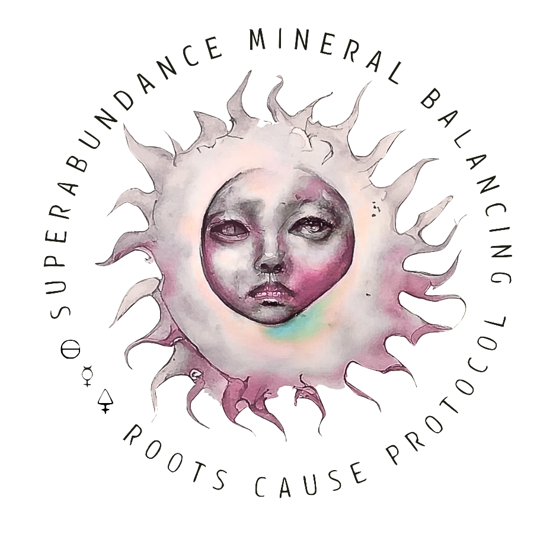

Personalized Guidance for Your Wellbeing
Your healing journey is unique, and your support should be too. Begin with a complimentary 45-minute consultation designed to understand your health history, current challenges, and long-term goals. This free-of-charge initial conversation gives us the opportunity to explore how targeted mineral support and botanical approaches can work together to restore balance, improve resilience, and support your overall vitality.Whether you’re just starting your journey to more vitality or looking to refine an existing protocol,- this call offers clarity, direction, and a grounded next step forward.
Schedule your free-of-charge orientation session